귀환 칸 클레이 화면
핍의 젤리 광산 실험실 「귀환 칸」 판(실험 48~53)에만 적용했어요. 다른 실험실 판과 본편은 그대로예요. 지금 버전은 v18.3이에요. 앱을 닫았다 다시 열면 받아져요.
v18.3 다시 만든 시안
- 블록 모양: 예전 모양으로 되돌렸어요. 블록끼리 빈틈 없이 맞붙고 모서리도 덜 둥글어요. 반사 띠, 아래 두께, 그림자 같은 클레이 질감만 남겼어요.
- 상자판: 배경과 살짝 더 구분돼요. 판 바닥을 조금 밝히고 옅은 가장자리 선을 넣었어요.
- 기믹: 그림 스티커였던 사슬, 자물쇠, 얼음, 폭탄, 광차 화살표, 랜덤 상자를 다른 블록과 같은 빛, 반사, 윤곽, 그림자로 다시 그렸어요.
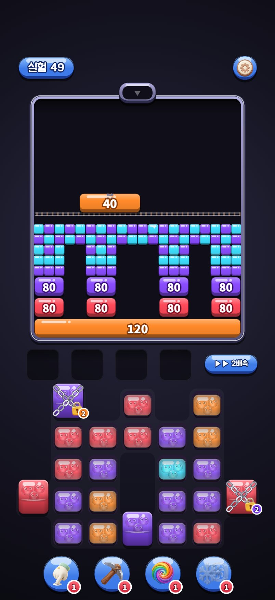
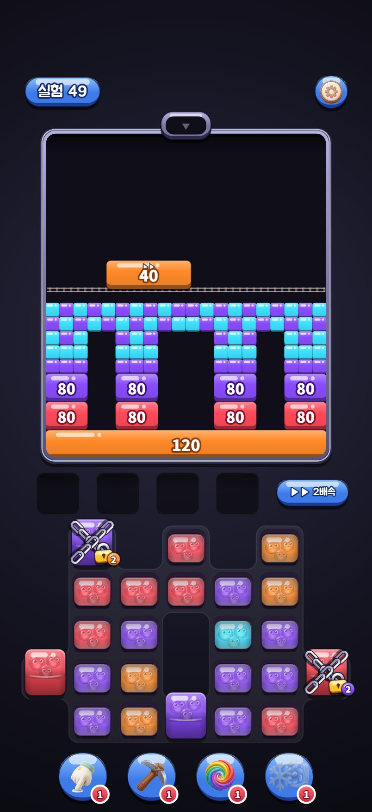
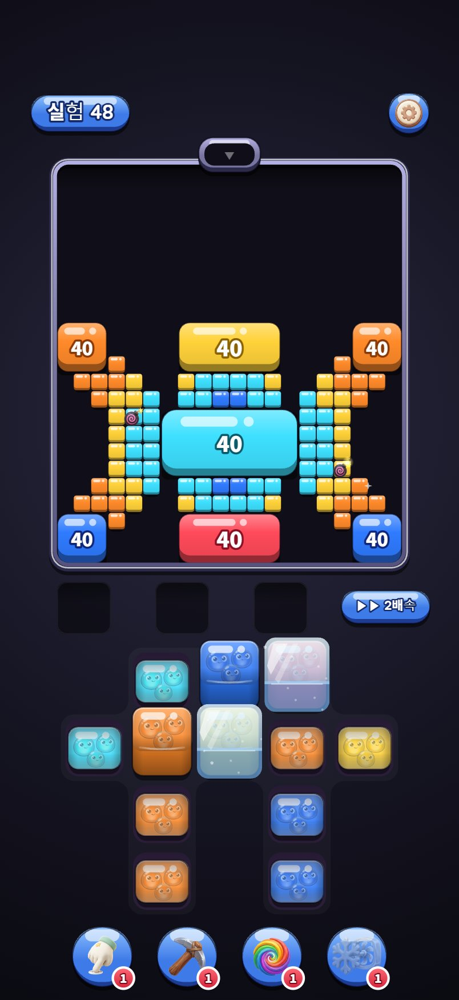
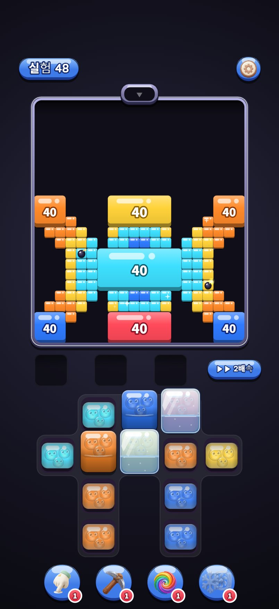
기믹 확대 (왼쪽 전 · 오른쪽 후)
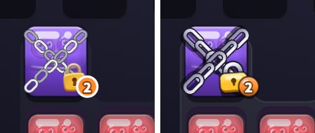
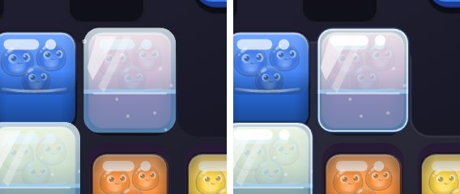
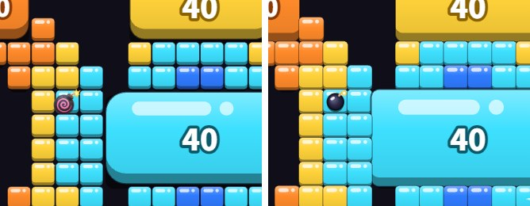
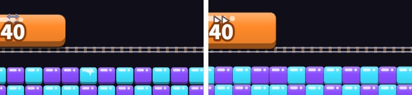
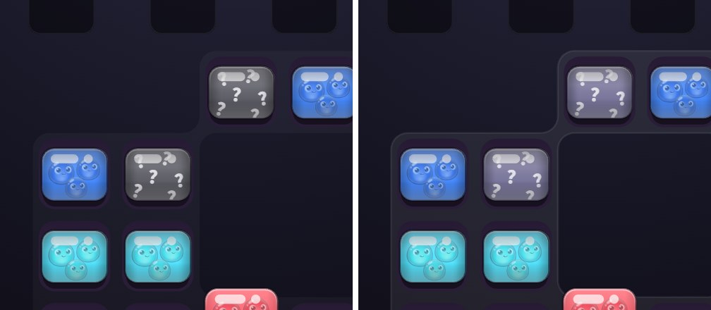
처음(v18.0)과 지금(v18.3)

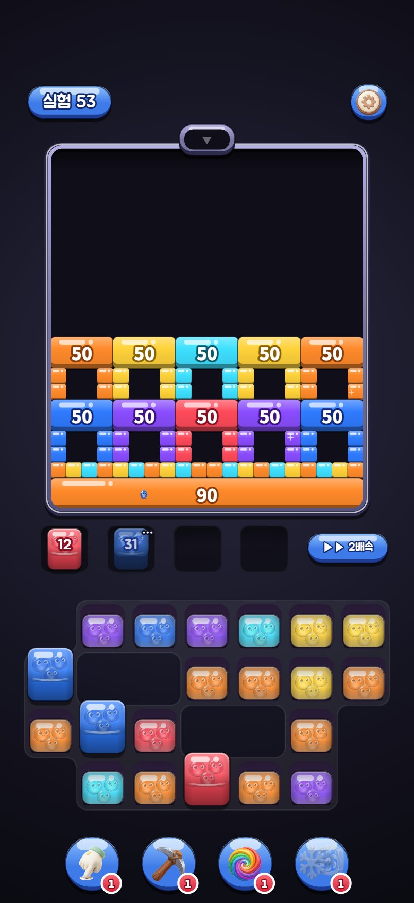

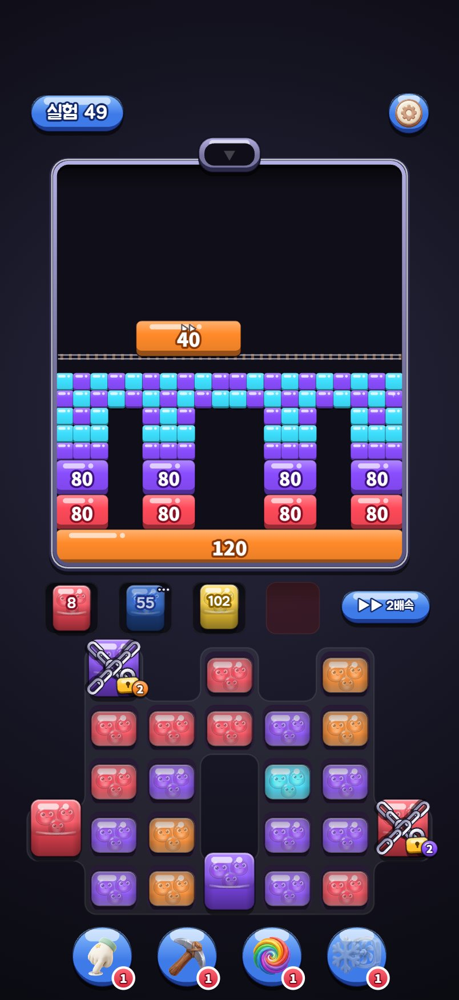


클레이 화면 전체 정리
- 바탕: 가운데가 살짝 밝고 가장자리로 갈수록 검어지는 명암 한 장
- 대기 칸: 발판 없이 파인 네모 칸만 있어요. 상자는 칸 가운데, 남은 수는 상자 위 큰 숫자예요
- 재질: 빛은 모두 왼쪽 위에서 와요. 위는 밝고 아래는 진한 두께 띠, 흰 반사 띠와 점, 짙은 윤곽, 바닥 그림자
- 테 · 단추: 챔버 테는 빛줄이 있는 관이고, 레벨 · 설정 · 2배속 · 아이템은 반짝이는 파란 단추예요
- 위험 표시: 빈 칸이 1개만 남으면 그 칸이 붉게 숨쉬고, 다 차면 모든 칸이 붉게 깜빡여요
가득 찼을 때
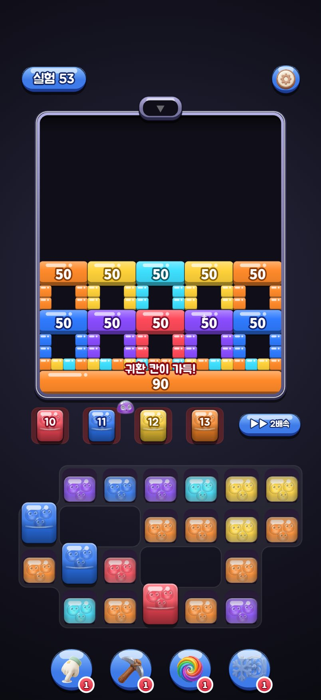
폰 402px · 360px 폭을 크롬과 아이폰 엔진(WebKit)으로 찍어 겹침 · 오류가 없는 것을 확인했어요. 실제 아이폰에서는 아직 못 봤어요.